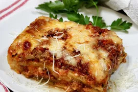

Lasagna

Description
Lasagna is a classic Italian dish made of layers of pasta, sauce, cheese, and various fillings. Traditionally, it consists of wide,
flat pasta sheets layered with a rich meat or vegetable sauce, such as a Bolognese, and a creamy béchamel or ricotta cheese mixture.
The dish is often topped with melted mozzarella or Parmesan cheese and baked until bubbly and golden.
Originating from Italy, lasagna is a hearty and comforting meal enjoyed worldwide. Its versatility allows for numerous variations,
including vegetarian options with layers of roasted vegetables or seafood. Each layer melds together during baking, creating
a flavorful and satisfying casserole.
=== Ingredients Required ===
- Meat: This super meaty lasagna has sweet Italian sausage and lean ground beef.
- Onion & Garlic: An onion and two cloves of garlic are cooked with the meat to add tons of flavor.
- Tomato Products: You'll need a can of crushed tomatoes, two cans of tomato sauce, and two cans of tomato paste.
- Sugar: Two tablespoons of white sugar add subtle sweetness and enhance the flavor of the sauce.
- Spices & Seasoning: This lasagna recipe is flavored with fresh parsley, dried basil leaves, salt, Italian seasoning, fennel seeds, and black pepper.
- Lasagna Noodes: Use store-bought or homemade lasagna noodles.
- Cheese: Parmesan, mozzarella, and ricotta cheese make this lasagna extra decadent.
- EggsAn egg helps bind the ricotta so it doesn't ooze out of the lasagna when you cut into it.
How to Make Lasagna Step-By-Step
- Make the meat sauce.
- Cook the noodles.
- Make the ricotta mixture.
- Layer the lasagna according to the recipe instructions.
- Cover with foil and bake.
- Let the lasagna rest before serving.